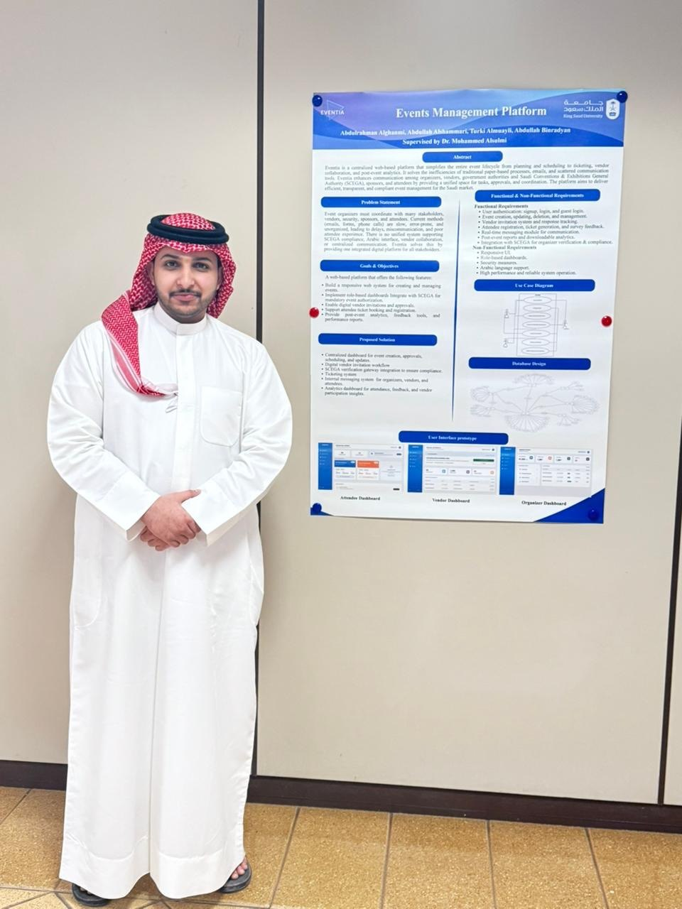
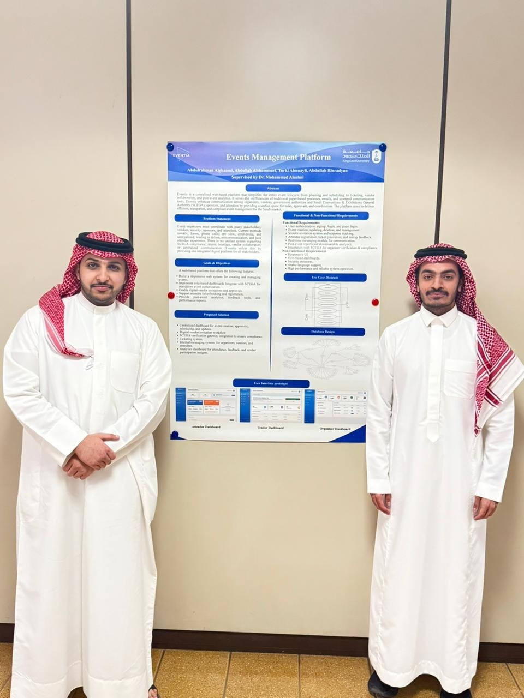

Eventia
A centralized platform that runs the full event lifecycle, from official licensing to live analytics, for organizers, vendors, attendees and admins.

Introduction
Eventia is my graduation project, and the largest system I have built. It is an end-to-end platform for the full event lifecycle: planning an event, getting it licensed, running it, keeping everyone involved in touch, and reviewing how it went. Today that work is spread across spreadsheets, chat apps, separate government portals and disconnected dashboards. Eventia pulls all of it, and every role that touches an event, into one place. It runs live at eventia.software.
Problem Statement
An event passes through many hands before, during and after it happens. Organizers plan it, vendors deliver parts of it, attendees take part, and authorities license it. Each group tends to work in its own tool, so information is scattered, status is hard to track, and the compliance steps that make an event legal happen far away from where the event is actually managed. The result is slow coordination, duplicated effort and no single source of truth.
Solution
Eventia answers this with one role-based platform. Organizers, vendors, attendees and admins each sign in to an experience shaped for them, with the permissions and views that fit their part of the job, while everyone shares the same underlying data.
Licensing is built in rather than bolted on. The platform guides an organizer through the official SCEGA permit workflow step by step, so compliance happens inside the same system that manages the event, instead of in a separate portal.
A Gemini-powered AI assistant supports users throughout, answering questions and offering the kind of guidance that would otherwise need a manual or a support desk. In-app messaging keeps organizers, vendors and admins in sync, and analytics dashboards turn day-to-day activity into a clear picture organizers can act on.
Under the hood, Eventia is a Django and Python application backed by a MySQL database, with the Gemini API integrated for the assistant. The aim throughout was a single, coherent product rather than a stack of disconnected tools.
Tech Stack
- Django
- Python
- MySQL
- Gemini AI
- JavaScript
- HTML
- CSS
Key Features
A few of the pieces that make Eventia work as one system:
- Role-based access tailored to organizers, vendors, attendees and admins.
- A built-in SCEGA licensing workflow that handles compliance in-platform.
- A Gemini-powered AI assistant for guidance and support.
- In-app messaging that keeps every role in sync.
- Analytics dashboards that turn activity into decisions.

Conclusion
Eventia took the messy, multi-tool reality of running an event and turned it into one coherent platform. Bringing planning, licensing, communication and analytics together under role-based access was the hardest and most rewarding part, and it is what makes the system feel like a single product rather than a collection of features.
Takeaway
Building Eventia stretched me as an engineer in ways earlier projects did not. A few things I am keeping with me:
- Designing a role-based system from the ground up taught me to think in permissions and trust boundaries, not just features.
- Building in a real compliance workflow showed how much value a product gains when it handles the mandatory, unglamorous steps for the user.
- Adding a Gemini-powered assistant was my first time weaving a large language model into a production web app.
- Carrying a large project from an idea to a working, deployed system was a lesson in scope, planning and finishing.
Explore Eventia
See it running and read the full story behind the build: